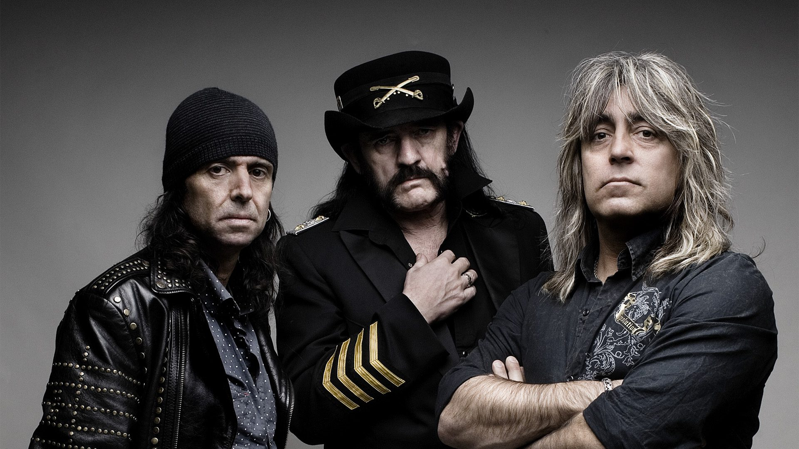

Lemmy Kilmister was a british Musician, one of the inovators of music and one of the first to revolutionize music with the British New Wave of Heavy Metal. With his band Motörhead they influenced many generations and had a massive succes with classic hits like Ace of Spades, Overkill and Bomber. Lemmy was nicknamed The Godfather of Heavy Metal. He was also co-wrote songs for The Prince of Darkness Ozzy Osbourne the biggest Heavy Metal singer and represantative of the music genre.
Lemmy had a heavy lifestyle that included chain smoking, heavy drinking preferably Jack Daniels and many drug overdoses. This heavy lifestyle resulted to his death in 2015 at age of 70, he knew that his lifestyle was dangerous thus he always said that: I don’t reccoemnd the lifestyle because many people have died because of it.
Lemmy was also a nice and funny person, he was polite and cheerful with great humor, he had one passion and hobby outside of music and that was collecting German WWII memorabilia leading to being criticized as a Neo-Nazi. He had a massive collection of Hitler Youth knifes as well as many medals.
Motörhead as a band had many lineup changes regarding drummers and guitarists, the classic era and arguably the best was the Lemmy-Fast Clark-Philthy Animal Taylor lineup, but it didn’t last long, after many changes in guitarists and drummers in the 90s the lineup consisted of Lemmy-Phill Camber-Mikkey Dee and it remained like that until the end of Motörhead at 2015.